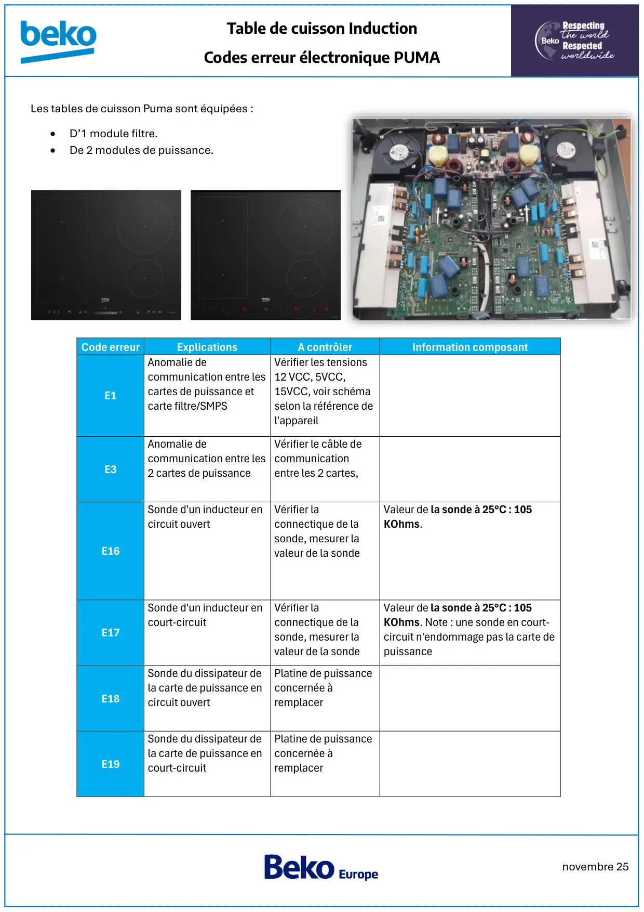
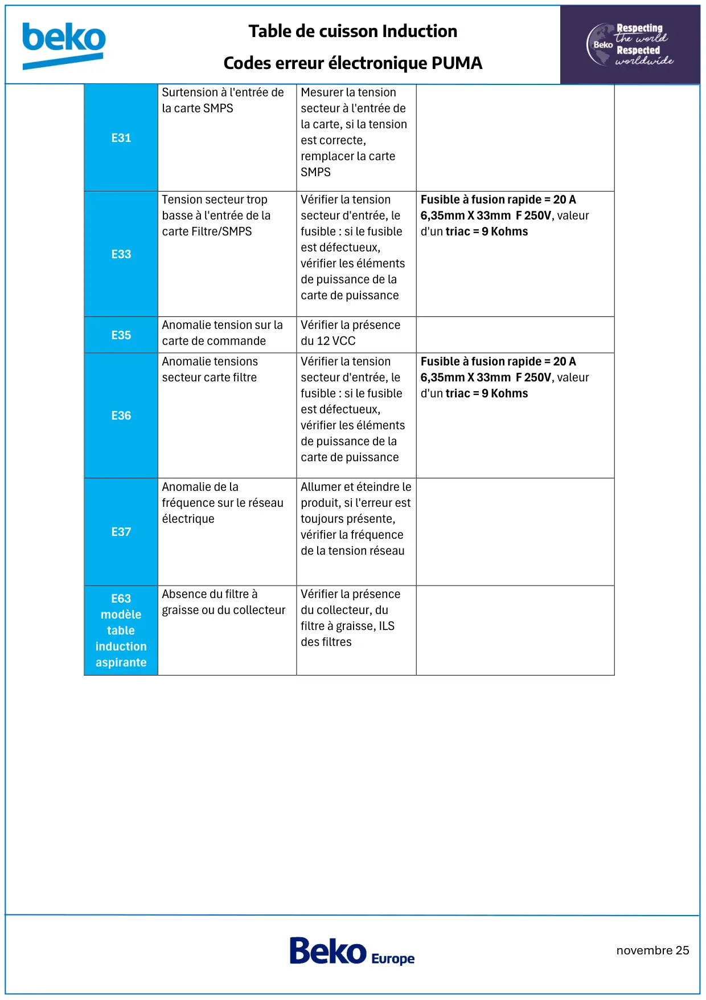

Induction Puma Signification Codes Erreur

novembre 25Table de cuisson InductionCodes erreur électronique PUMALes tables de cuisson Puma sont équipées :•D’1 module filtre.•De 2 modules de puissance.Code erreurExplicationsA contrôlerInformation composantE1Anomalie decommunication entre lescartes de puissance etcarte filtre/SMPSVérifier les tensions12 VCC, 5VCC,15VCC, voir schémaselon la référence del'appareilE3Anomalie decommunication entre les2 cartes de puissanceVérifier le câble decommunicationentre les 2 cartes,E16Sonde d'un inducteur encircuit ouvertVérifier laconnectique de lasonde, mesurer lavaleur de la sondeValeur de la sonde à 25°C : 105KOhms.E17Sonde d'un inducteur encourt-circuitVérifier laconnectique de lasonde, mesurer lavaleur de la sondeValeur de la sonde à 25°C : 105KOhms. Note : une sonde en court-circuit n'endommage pas la carte depuissanceE18Sonde du dissipateur dela carte de puissance encircuit ouvertPlatine de puissanceconcernée àremplacerE19Sonde du dissipateur dela carte de puissance encourt-circuitPlatine de puissanceconcernée àremplacer
1 / 2
novembre 25Table de cuisson InductionCodes erreur électronique PUMAE31Surtension à l'entrée dela carte SMPSMesurer la tensionsecteur à l'entrée dela carte, si la tensionest correcte,remplacer la carteSMPSE33Tension secteur tropbasse à l'entrée de lacarte Filtre/SMPSVérifier la tensionsecteur d'entrée, lefusible : si le fusibleest défectueux,vérifier les élémentsde puissance de lacarte de puissanceFusible à fusion rapide = 20 A6,35mm X 33mm F 250V, valeurd'un triac = 9 KohmsE35Anomalie tension sur lacarte de commandeVérifier la présencedu 12 VCCE36Anomalie tensionssecteur carte filtreVérifier la tensionsecteur d'entrée, lefusible : si le fusibleest défectueux,vérifier les élémentsde puissance de lacarte de puissanceFusible à fusion rapide = 20 A6,35mm X 33mm F 250V, valeurd'un triac = 9 KohmsE37Anomalie de lafréquence sur le réseauélectriqueAllumer et éteindre leproduit, si l'erreur esttoujours présente,vérifier la fréquencede la tension réseauE63modèletableinductionaspiranteAbsence du filtre àgraisse ou du collecteurVérifier la présencedu collecteur, dufiltre à graisse, ILSdes filtres
2 / 2